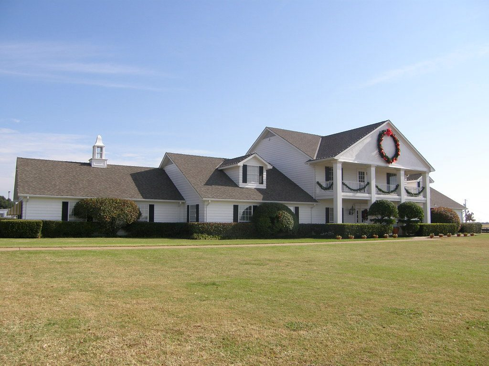

Home / Rent-to-Own
Rent-to-own homes in Fort Worth: what actually exists in 2026
If you've searched "rent to own homes near me" and found nothing but scams and dead links — you're not crazy. Zillow doesn't list them. Realtor.com doesn't either. Real rent-to-own runs through a handful of company programs — and each takes applications directly on its own site. Here's the honest map of what exists, who qualifies, and what it really costs.

How real rent-to-own works
A program company buys the house you pick — a normal house, on the normal market — with cash. You move in as a renter with a locked option to buy it from them later, usually within 1–3 years, while you fix credit or build savings. When your mortgage is ready, you buy it. If life changes, you walk away (terms vary on what you keep).
The programs operating in DFW
| Program | Typical minimums | Worth knowing |
|---|---|---|
| Divvy Homes | ~550 credit · ~$2,500/mo income | Longest-established; 1–2% down; pairs you with a credit counselor. Since its Brookfield acquisition the program has sharply contracted — recent reporting says it is closed to new applications. Our full status page covers what happened and what to do instead. |
| Pathway Homes | varies | Backed by Invitation Homes; active in North Texas. |
| Dream America | varies | Operates in the Dallas metro; different fee structure. |
Requirements, pricing, and coverage areas change — sometimes monthly. Check each program's site for current terms before applying, and never pay anyone a fee just to "get you in."
The honest trade-offs (read this part)
You pay for the bridge. Your buy-back price is set above what the program pays for the house, and monthly costs run higher than plain renting. That's the price of moving in now instead of in three years.
Not everyone converts. Industry-wide, plenty of participants never exercise the purchase. The program only wins for you if you actually work the credit plan.
Sometimes the answer is "just wait and rent cheap." If your credit is six months from mortgage-ready, skipping the program premium and taking a short lease is often the better math. The right door beats the nearest one — even when the nearest one has better marketing.
What's coming
When West FW Living's full service opens, walking clients through program selection and representing them in the house hunt is exactly the help we'll provide. Until then: the programs above take applications directly, their prequalification checks are soft (no credit hit), and everything on this page is free information. Early-list members get first access at launch.